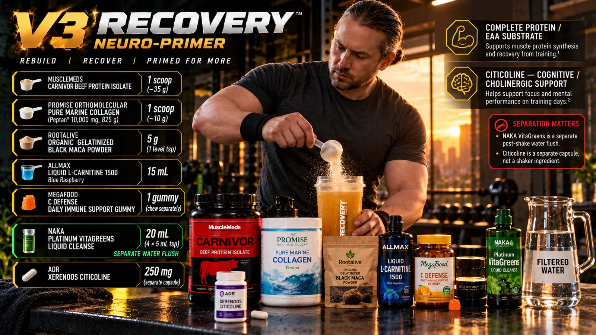
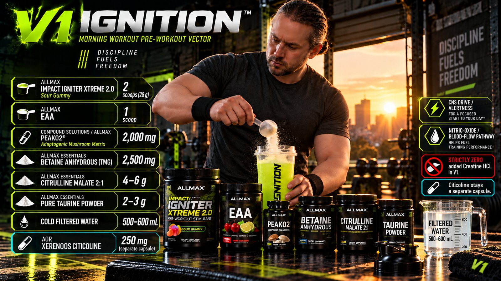
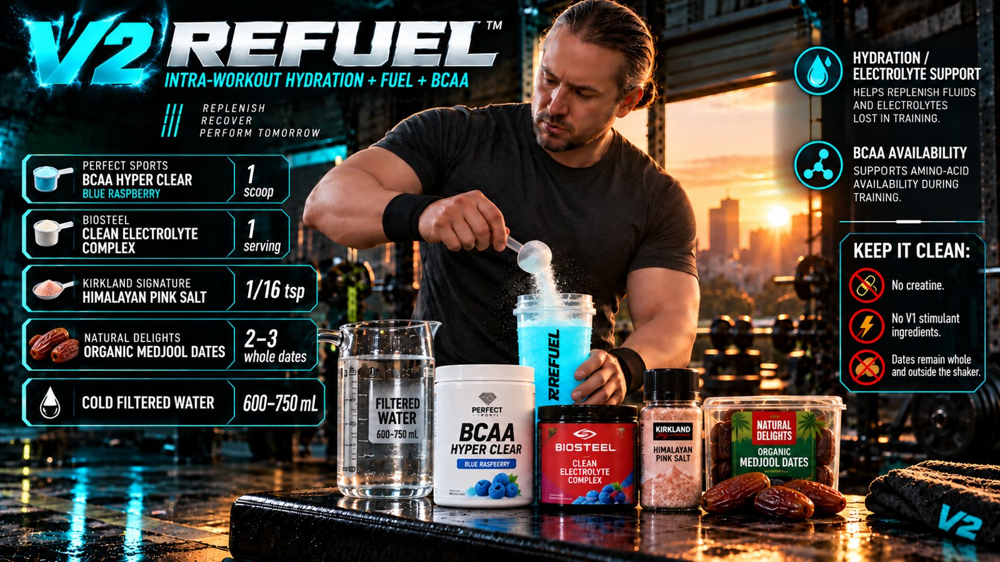
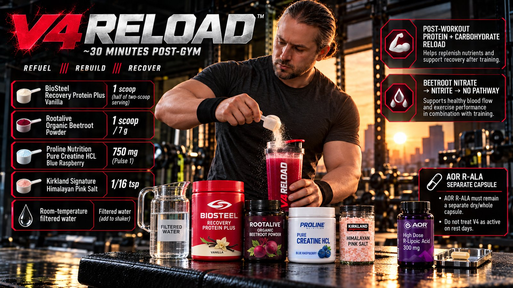
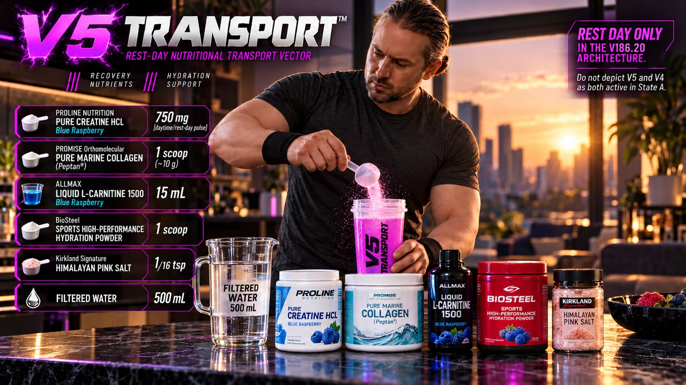
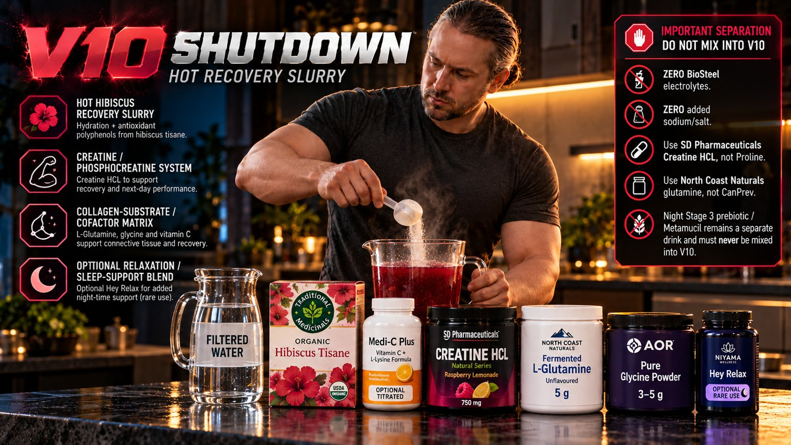

FIT PROTOCOL · V2.0
Vector folders
The recorded vectors in daily order. Each folder opens a separate ingredient and protocol page with descriptive downloads.

V3 RECOVERY04:00; training and restOpen ingredients + protocol ↗
V1 IGNITION06:00 pre- gym; morning training onlyOpen ingredients + protocol ↗
V2 REFUEL09:30 intra- workout; training onlyOpen ingredients + protocol ↗
V4 RELOAD11:00 post- workout; training onlyOpen ingredients + protocol ↗
V5 TRANSPORT16:00-16:30; rest branch onlyOpen ingredients + protocol ↗
V10 SHUTDOWN18:30; training and restOpen ingredients + protocol ↗ PUMP EVENINGInactive. Never used with V1Open ingredients + protocol ↗
PUMP EVENINGInactive. Never used with V1Open ingredients + protocol ↗